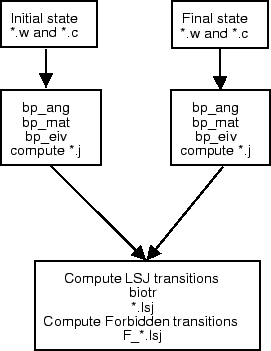

The relativistic effects can be determined using a Breit-Pauli calculation. The LSJ eigenvectors are computed using a set of 3 programs. bp_ang computes the non relativistic angular data which is invariant with Z. Next, for each Z bp_mat computes the interaction matrix and bp_eiv computes the tt J dependent eigenvectors.
|  |
This step performs a Breit-Pauli Configuration Interaction (BPCI) calculation for the expansion included in groups E1 and O1. The script below shows the steps, assuming Breit-Pauli calculation in the directory LSJ, configuration lists and wavefunctions in E1 and O1:
% cat sh_bp
set -x
echo "computing *.j files"
n=4 # n shows for which n to perform BPCI
D=E1 # name of the group
# compute even
cp ../E1/E${n}.c A.c # copy from E1 the cfg list
${ATSP}/bin/sh_cat A.c # remove '*' and blanks
${ATSP}/bin/bp_ang <in_ang_${D} # generate angular data
for Z in 8 9 # range of Z's
do
(echo
cp ../${D}/${D}.${Z}_${n}.w A.w # copy the wavefunctions in A.w
${ATSP}/bin/bp_mat <in_mat_${D} # compute all contributions
${ATSP}/bin/bp_eiv <in_eiv_${D}_${Z} # compute eigenvectors
mv A.j ${D}.${Z}.j # rename A.j
echo)
done
rm *lst* A.l A.w # rm previous files
D=O1 # start group O1
# compute odd
cp ../O1/O${n}.c A.c # copy from O1 the cfg list
${ATSP}/bin/sh_cat A.c # remove '*' and blanks
${ATSP}/bin/bp_ang <in_ang_O1 # generate angular data
for Z in 8 9 # range of Z's
do
(echo
cp ../${D}/${D}.${Z}_${n}.w A.w # copy the wavefunctions in A.w
${ATSP}/bin/bp_mat <in_mat_${D} # compute all contributions
${ATSP}/bin/bp_eiv <in_eiv_${D}_${Z} # compute eigenvectors
mv A.j ${D}.${Z}.j # rename A.j
echo)
done
rm *lst* A.l A.w A.* A.c.old # rmv not needed files
The scripts starts with setting D to the name of the group. Note that after completing the mchf calculation, there will be 2 files E3.c, E4.c and O3.c, O4.c in each directory E1 and O1. The files are concatenated configurations lists from the terms participating in each group, the number 3 or 4 indicate n, the principal quantum number. Within a *.c file, each group has two header lines and a separator "*". However, the Breit-Pauli programs expect a single list with a single header part and no separators, i.e. the configuration list is considered the expansion of ONE wave function. In addition, the programs read the configuration list until the first occurrence of an "*". Therefore, the configuration list prior to the Breit-Pauli calculation need to be reformatted, removing separators, blank lines and multiple header lines. This can be accomplished by using the shell script sh_cat supplied with the code, or by editing each *.c file. The script uses sed, and the user may need to verify if there is a sed program on the system and its path ("which sed"). (Node: the script uses sed from the gnu distribution, other sed may not work as expected and the user needs to test the script before using it).
There is a single call to bp_ang which computes Z independent angular data. Then, for each Z, the data needed for forming the various J-dependent matrices are computed by bp_mat, after which eigenvalues are determined by bp_eiv.
In this case, since there were no variables involved, it was decided to put the input data for each application in a separate file is shown below (group E1).
# .......input file in_ang_E1, used for bp_ang........ >cat in_ang_E1 A,y,y y 2 n 1,1,1,0 y # .......input file in_mat_E1, used for bp_mat........ >cat in_mat_E1 A,y,y g y # .......input file in_eiv_E1_8, used for bp_eiv........ >cat in_eiv_E1_8 A,y,y g 5,1 1,2 1,2 1,4 y 0 # 2S # energy correction 2S 0 # 2P # energy correction 2P 0 # 2D # energy correction 2D 0 # 4P # energy correction 4P
Each program takes the following interactive input, assuming that input files are from group E1, the calculation is for Z=8 and the required configuration list and the wave function files have been copied to A.c and A.w:
# ........Breit-Pauli Calculation for Iso-electronic Sequence........ > bp_ang Enter ATOM, relativistic (Y/N) with mass correction (Y/N) >A,y,y Gradient or Slater form? (G/S): >g Indicate the type of calculation 0 => non-relativistic Hamiltonian only; 1 => one or more relativistic operators only; 2 => non-relativistic operators and selected relativistic: >2 All relativistic operators ? (Y/N) >n Spin-orbit,Spin-other-orbit,Spin-spin,Orbit-Orbit (0/1) >1,1,1,0 All Interactions? (Y/N): >y > bp_mat Enter ATOM, relativistic (Y/N) with mass correction (Y/N) >A,y,y Gradient or Slater form? (G/S): >g Default Rydberg constant (y/n) >y Finished with the file > bp_eiv Enter ATOM, relativistic (Y/N) with mass correction (Y/N) >A,y,y Gradient or Slater form? (G/S): >g Enter Maximum and minimum values of 2*J >5,1 Enter eigenvalues: one line per term, eigenvalues separated by commas 2*J = 4 >1,2 2*J = 2 >1,2 2*J = 0 >1,4 Default Rydberg constant (y/n) >y :: Allocating memory for Block 2J = 4 :: IN MEMORY: Block 2J = 4 with 455633 matrix elements Starting Davidson ... Finished with the file ------------------------------------------------------------------------